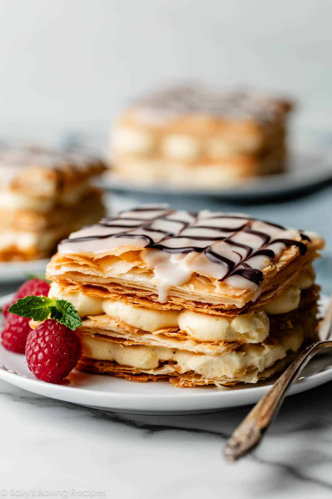

Napoleon Recipe

Flakey Pastry With Custard Filling
A quintessential French pastry, this cake is 3 layers of flakey crust filled with a pudding cream between each layer. It is also known as mille-feuille and has been around for hundreds of years.
The cake looks to be a daunting recipe, but it is quite simple. Few ingredients are needed and it is possible to use store bought pastry dough, although homemade is always better. The components can be made over days, but it is best enjoyed as soon as it is assembled.
Ingredients:
- 1/2 recipe of Puff Pastry
- Creme Patissiere
- 510g whole milk
- 3 egg yolks
- 75g granulated sugar
- 28g cornstarch
- 43g butter
- 1/4 teaspoon salt
- 1 1/2 teaspoon vanilla extract
- Glaze
- 113g sifted powdered sugar
- 57g heavy cream
- 1/2 teaspoon light corn syrup
- 22g semisweet chocolate chips, melted
Instructions
Make the filling
- In a saucepan, stir together 340g of the milk, sugar, and salt. Bring to a simmer over medium heat until the sugar is dissolved.
- In another bowl, whisk the cornstarch and egg yolks with the rest of the milk until smooth and lump free.
- Slowly whisk about 1/3 of the hot milk mixture into the egg mixture, then pour the egg/milk mixture into the remaining hot milk. Bring to a boil whisking constantly until the mixture thickens and bubbles reach the center of the saucepan
- After letting the mixture boil for an extra minute, remove it from the heat and strain it through a fine strainer into a bowl.
- Stir in butter and vanilla extract, then place plastic wrap directly on the top surface of the filling and refridgerate until cool
Prepare the pastry
- Roll out the dough on a lightly floured surface into a 11" x 14" x 1/8" rectangle.
- Transfer the dough to a parchment lined baking sheet by foling it in half and then in half again. Unfold the dough on the baking sheet.
- Prick the dough all over with a fork.
- Cover the dough with parchment paper and then chill in the refridgerator for at least 30 minutes to overnight.
- Preheat the oven to 375°F
- Remove the chilled dough and place another baking sheet on top of it. This will keep the dough flat while baking. Bake the dough for 25 minutes with the pan on top, then remove the pan and continue cooking for another 15 minutes.
- Remove the pastry and transfer to rack to cool.
- Using a serrated knife, trim the edges of the pastry sheet to make a 10" x 12" rectangle.
- Cut the rectangle into three 10" x 4" strips and select the nicest one for the top.
Make the glaze
- Mix the powdered sugar, milk, and corn syrup together in a bowl.
- Transfer the melted chocolate to a pastry bag or small zip lock bag.
- Pour the glaze over the nicest pastry piece covering it completely and smoothing it out with a spatula
- Pipe the chocolate length wise onto the glazed pastry making parallel lines about an inch apart. Use a knife or toothpick to draw alternating lines perpendicularly through the chocolate stripes.
- Allow the glazed pastry to dry
- Spread or pipe the filling evenly over the two remaining pieces of pastry so it is 3/4" thick, then stack them and add the glazed piece on top.
- Refridgerate the pastry for atleast 30 minutes and up to 12 hours.
- Serve chilled or at room temperature.